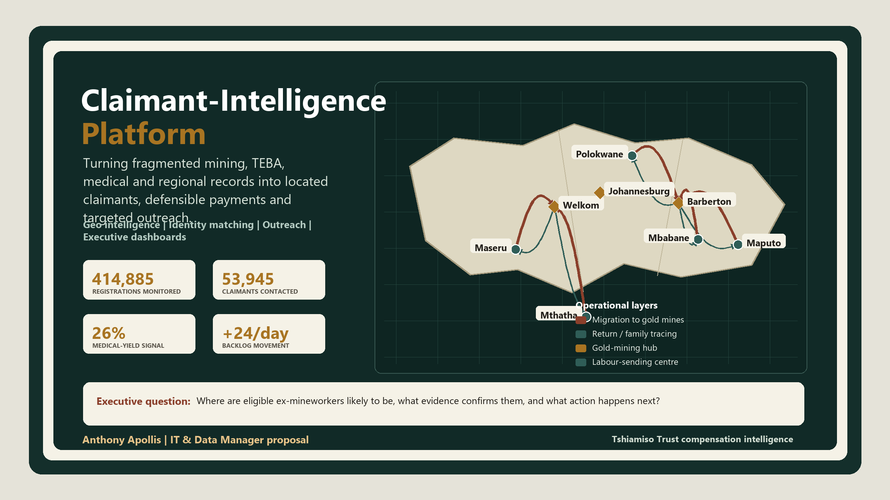

Prepared by Anthony Apollis for the Chief Executive Officer and Board of Trustees. A working proposal for how the IT & Data Manager role turns silicosis and TB compensation data into found claimants, defensible payments, and a governed system trustees can actually run.

This report is insight-led: every chart, table and map answers a management question. The reader should not have to infer the point. Each section states the data used, the finding, why it matters, and the action it supports.
| Insight | Why it matters | Management decision supported |
|---|---|---|
| Contact made is low compared with registrations | The Trust may know many names without knowing how to reach them. | Approve claimant tracing worklists and outreach prioritisation. |
| Eligibility yield is only 26% | Medical screening capacity must be directed toward likely eligible and document-ready cases. | Add eligibility-yield and deferred-case tiles to the CEO dashboard. |
| Backlog is growing at a net +24 cases/day | Even a small daily mismatch becomes a Board-level service risk within one quarter. | Create daily certified-unpaid exception management. |
| Regions behave differently | Volume does not equal efficiency; Botswana converts well, KZN and Zimbabwe need intervention. | Use region-specific playbooks instead of one national campaign. |
| Mineworker movement is spatially patterned | Migration and return routes explain where dependants and former workers may now be found. | Use the map layers to plan field trips, mobile clinics and service-site coverage. |
The Claimant-Intelligence Platform addresses a specific operational problem: finding and compensating former gold mineworkers and dependants affected by silicosis and occupational TB. The issue is not only whether funds exist. The issue is whether the Trust can locate the right people, prove the right claim, protect sensitive data, and make compensation decisions that are accurate and defensible.
Implement formal ownership for data quality, privacy, retention, consent, audit trails and exception handling. Old archive data should be useful, but also traceable, explainable and POPIA-compliant.
Use SMS, WhatsApp and call-centre workflows once likely claimants are identified. Feed every failed call, wrong number, missed appointment and successful contact back into the scoring model.
Separate trustee, call-centre, medical, finance, ICT and executive access. Sensitive identity, medical and banking data should be visible only to users with a clear business need.
Treat dashboards as living management tools, not static reports. When a region lags, a BME queue stalls, or certified unpaid claims rise, the dashboard should trigger a management response.
Tshiamiso Trust exists to compensate ex-gold mineworkers and dependants of workers with silicosis or occupational TB. The medicine and the mandate are settled. The blocker is locating people. Many moved to rural former labour-sending areas or neighbouring countries, changed numbers, or passed away without their families knowing a claim exists.
Mine employment records, TEBA records, ID data and medical files sit in different systems with inconsistent name spellings, mine numbers and dates. A person who worked under three different mine numbers across two provinces doesn't look like one claimant. They look like three partial ones.
Outreach without matching wastes field time on people already paid, already deceased with no traced dependant, or duplicated across source systems. The Trust needs to know where to look before it decides how to reach.
Live counters from tshiamisotrust.com's Progress Report, pulled 15 July 2026. All 8 stages of the Trust's own claims process, not a trimmed view.
Registrations (414,885) run far ahead of Contact Made (53,945) and Appointments (191,592) exceed Lodgements. These are 8 process counters with different denominators, not one claimant flowing cleanly through 8 gates. The MCP-vs-BME question I flagged before now has a real answer: the Trust's own medical eligibility breakdown shows 119,555 MCP decisions splitting into 31,375 medically eligible, 78,144 medically ineligible, and 9,401 deferred. MCP counts decisions, including historical-TB cases that skip a fresh BME, which is exactly why it doesn't have to track BME volume 1:1.
The homepage banner still reads "over R2.5 billion paid," while the live counter beside it reads R2.73 billion. A stale hardcoded banner next to a real-time figure. Small, but exactly the kind of inconsistency a monthly ICT/data QA pass (Section 07) is built to catch before a trustee or journalist does.
The claimant-location problem in Section 01 isn't a data accident. It's the direct legacy of how the gold industry recruited and housed its labour for most of a century. Understanding that system is what makes the regional data in Section 06 make sense, not just line up.
Gold was discovered on the Witwatersrand in 1886. To staff it, the mines built two recruiting networks: the Witwatersrand Native Labour Association (WNLA, "Wenela," est. 1900) drawing from Mozambique and further afield, and the Native Recruiting Corporation (NRC) drawing from Basutoland (Lesotho), Bechuanaland (Botswana), Swaziland (Eswatini) and South Africa itself. The two merged in 1977 into TEBA. The Employment Bureau of Africa, the same archive this proposal's matching pipeline depends on.
Workers signed annual contracts and lived in single-sex hostel compounds. Over 97% of a roughly 500,000-strong workforce, cut off from family for the length of each contract, then rotating home before the next one. By the 1970s, about 70% of gold-mine labour was foreign-born. That oscillation between mine hostel and rural homestead is precisely why claimants and their descendants are hardest to find in exactly the regions that supplied the labour. The regional rankings in Section 06 aren't arbitrary. They're the recruitment map, inverted.
Autopsy studies of South African gold miners found silicosis prevalence rising from roughly 3% (Black miners) and 18% (white miners) in 1975 to 32% and 22% respectively by 2007. And in miners with around 40 years of dust exposure, silicosis was found in up to 52% at autopsy.
Tuberculosis followed the same exposure. South African gold-mine TB incidence has run at roughly 3,000–7,000 cases per 100,000 workers a year. Against a South African national average of 981 and a global average of 128 per 100,000, and more than ten times the World Health Organization's emergency threshold of 250 per 100,000. Rates peaked above 4,000 per 100,000 in 1999, compounded by HIV co-infection running near 29% in the mine workforce by 2001. Silica dust independently raises TB risk, which is exactly why the Trust compensates the two diseases under one scheme rather than two.
Sources: Nelson et al., Three Decades of Silicosis: Disease Trends at Autopsy in South African Gold Miners (Environmental Health Perspectives, via PMC); Stuckler et al. and World Bank/Results UK reporting on TB in Southern African mining; Oxford Human Rights Hub and GroundUp reporting on the 2019 Tshiamiso settlement; South African History Online and Heritage Portal on WNLA/NRC/TEBA and the compound system.
Every downstream system. Matching, dashboards, outreach prioritisation. Has to be built around this schedule, because the class a claimant is certified into determines both the payment ceiling and which data fields matter for verification.
| Class | Certification meaning | Maximum (before reductions) |
|---|---|---|
| Silicosis Class 1 | Early silicosis, lung impairment up to 10% | R84,027.66 |
| Silicosis Class 2 | Equivalent to 1st degree silicosis | R180,059.28 |
| Silicosis Class 3 | Equivalent to 2nd degree silicosis | R300,098.80 |
| Silicosis Special Award | Extraordinary, severe disease conditions | R600,197.60 |
| Dependant Silicosis A | Deceased worker, silicosis primary cause of death | R84,027.66 |
| Dependant Silicosis B | Deceased worker had a Class 2 or 3 condition | R120,039.52 |
| TB 1st Degree | Qualifying underground work + 1st degree TB | R60,019.76 |
| TB 2nd Degree | Qualifying underground work + 2nd degree TB | R120,039.52 |
| Historical TB | Older certificate, usually 1965–1994 | R12,003.95 + |
| Dependant TB | Deceased worker, TB primary cause of death | R120,039.52 |
Not a replacement for the case-management system. A governed data layer that turns scattered mine, medical, call-centre and geographic records into a ranked list of who to find next, and a management view the CEO and trustees can trust.
Mine employment history, TEBA archives, medical exam status, call-centre logs, death registrations.
ID number, mine number, surname variants, DOB and employer fuzzy-matched; uncertain matches flagged for human review, never auto-merged.
Uncontacted claimants plotted by province, district and former labour-sending village to target field teams.
SMS/WhatsApp/call-centre workflows with every attempt and failure reason logged, routed through chiefs, clinics, churches, pension pay-points.
Claims registered vs. paid, bottlenecks, regional outreach yield, unresolved-document exceptions. For the CEO and Board.
Who is eligible but not yet contacted? Which regions carry the highest unresolved caseload? Which claimants are stuck on missing documents or missed medical exams? Where should the next outreach trip go?
Duplicate detection, missing-document alerts, mine-history validation and medical-status checks run continuously. Because a bad match here doesn't just skew a dashboard, it delays or misdirects a real payment.
Section 06 ranks which region carries the most unresolved caseload, using the Trust's own published regional figures. This map now does three jobs: it shows the historical movement of mineworkers from labour-sending areas to gold-mining hubs, the reverse tracing problem when sick workers or dependants return home, and the field-team outreach corridors needed to find them. Great-circle distance is still calculated from real coordinates, but the map is no longer a single-purpose distance sketch.
| Labour-sending centre | Nearest gold-mining hub | Great-circle distance |
|---|---|---|
| Mbabane, Eswatini | Barberton | 58 km |
| Maseru, Lesotho | Welkom (Free State Goldfields) | 166 km |
| Maputo, Mozambique | Barberton | 154 km |
| Polokwane, Limpopo | Barberton | 263 km |
| Mthatha, Eastern Cape | Welkom (Free State Goldfields) | 448 km |
| Durban, KwaZulu-Natal | Barberton | 452 km |
Reading it operationally: an Mbabane-based field trip sits under an hour from Barberton by straight-line distance. Cheap to bundle with a routine visit. A Mthatha or Durban trip is a multi-day exercise that needs its own budget line and batched appointments, not a same-week add-on. That's the difference between an outreach calendar built on assumption and one built on a formula that recalculates itself.
Everything below runs on the Trust's own published Progress Report (15 July 2026). Real regional table, real correlation, real clustering, a real spatial nearest-neighbor test on 17 named Trust sites, and a real trend projection. Hover any chart or map for detail; click a table row to highlight its point.
| Region | Lodgements | BMEs | Payments | Conversion | Value Paid | Cluster |
|---|---|---|---|---|---|---|
| South Africa (aggregate) | 79,761 | 44,976 | 12,193 | 15.3% | R1,196,531,716 | Trust-wide aggregate |
| Eastern Cape | 36,503 | 18,853 | 6,405 | 17.5% | R626,818,910 | Anchor (high volume) |
| Lesotho | 57,565 | 23,274 | 10,633 | 18.5% | R1,003,860,744 | Anchor (high volume) |
| Free State | 17,195 | 8,750 | 2,651 | 15.4% | R274,121,909 | Emerging (mid volume) |
| Mozambique | 11,739 | 6,395 | 1,833 | 15.6% | R193,813,114 | Emerging (mid volume) |
| North West | 9,270 | 5,975 | 1,395 | 15.0% | R130,612,003 | Emerging (mid volume) |
| Gauteng | 7,095 | 4,168 | 739 | 10.4% | R68,240,690 | Emerging (mid volume) |
| eSwatini | 6,681 | 3,327 | 1,426 | 21.3% | R127,310,397 | Emerging (mid volume) |
| KwaZulu-Natal | 6,283 | 3,216 | 558 | 8.9% | R58,043,007 | Emerging (mid volume) |
| Botswana | 5,961 | 3,899 | 1,975 | 33.1% | R210,348,595 | Small / early-stage |
| Mpumalanga | 1,392 | 631 | 197 | 14.2% | R16,530,635 | Emerging (mid volume) |
| Limpopo | 871 | 542 | 119 | 13.7% | R9,576,705 | Emerging (mid volume) |
| Zimbabwe | 834 | 32 | 0 | 0.0% | R0 | Stalled, needs intervention |
| Western Cape | 796 | 352 | 90 | 11.3% | R8,579,205 | Emerging (mid volume) |
| Northern Cape | 356 | 197 | 39 | 11.0% | R4,008,653 | Emerging (mid volume) |
| Malawi | 0 | 0 | 0 | R0 | Stalled, needs intervention |
Source: tshiamisotrust.com/information/progress-report/, 15 July 2026. "South Africa" is the Trust's own aggregate row, excluded from clustering and correlation below.
Lodgements, BMEs, payments and value are almost perfectly correlated. Bigger regions have more of everything. The signal worth acting on: conversion rate barely correlates with volume. Size does not predict efficiency. Hover any cell for the exact figure.
K-means on standardised lodgement volume, conversion rate and value-per-payment splits 15 regions into four groups. Botswana leads on efficiency at 33.1% conversion. Zimbabwe is the clearest flag: 834 real lodgements, zero payments. Hover a point, or click a table row above to find it here.
Final certifications grow at +36 a day. Payments grow at only +12 a day. Drag the slider to project the backlog forward at that real, live-counter rate.
The same techniques run on a schedule, not once. A nightly job flags any region whose conversion drops more than one standard deviation below its cluster average, which would have caught KZN and Zimbabwe automatically. The backlog trend recalculates daily and alerts the CEO if the net rate turns positive for more than a week. The cluster model re-runs monthly as new lodgements land.
Python (pandas, scikit-learn, matplotlib for static exports). Pearson correlation on 5 funnel metrics. K-means (k=4, standardised features, random_state=42) on lodgements, conversion rate and value-per-payment. Linear trend projection on the homepage's own daily deltas. Full dataset: companion Excel, Regional Data (Real) tab.
The Trust's Progress Report names its top lodgement, appointment and BME sites with real activity counts. Average Nearest Neighbor Analysis (ANN), the standard GIS test for whether points cluster, spread randomly, or sit uniformly, was run on all 17 of those real, named sites.
Method: haversine pairwise distance, expected mean distance under complete spatial randomness (CSR) over the sites' bounding-box area, z-test per the standard ANN formula (as used in ArcGIS's Average Nearest Neighbor tool). Region-level version: companion Excel, NNA & k-NN (Real) tab.
Section 01 named the real blocker: fragmented records make one person look like three. Nearest Neighbor Analysis has two forms, and both apply here.
Migrant workers in mining regions like North West and Free State typically settle near mine shafts in informal or shack settlements, not the formal towns in Section 06's site map above. Research on migrant labour markets shows physical proximity carries real weight: workers living closer to already-employed neighbours hear about vacancies and recruitment notice boards sooner, and get referred faster. Spatial NNA is the tool that tests this. Run against settlement GPS points (not yet in a public dataset, the gap a future field survey or drone/satellite imagery pass would close), it would prove or disprove whether tight settlement clustering near a shaft head gives job seekers a measurable time-to-employment advantage, the same clustering logic already proven significant on the Trust's own 17 real sites above.
A migrant's most useful "nearest neighbours" are often social, not physical: kinship, home language, village of origin. Migrant mining history runs on chain migration, a worker from a specific district travels to a specific mine because a relative or fellow villager is already there. That is a k-NN problem: encode a claimant's home country, language, village and education level as features, and their nearest social neighbours in the existing employment record predict which mine or shaft they most likely worked at, even when the claimant's own mine number is missing or illegible. The same feature-distance method used for identity resolution below, pointed at a different question.
| Job-seeking aspect | How NNA measures it |
|---|---|
| Physical housing | Checks whether migrants cluster near mine hubs to minimise travel cost and maximise notice-board access. |
| Hiring pipelines | Tests whether living near employed miners raises a job-seeker's chance of being referred for a vacancy. |
| Support networks | Maps the proximity of informal or unregistered miners to host communities for resource pooling and survival. |
| Missing claimants | Same math, run on lodgement and payment records instead of job referrals, to find where the unexamined still live. |
Exact database joins fail on a misspelled name or a partial ID. k-NN treats each record as a point in feature space (birth year, name, mine number, region) and merges whichever records sit closest together, not just the ones that match exactly. Run on 8 synthetic demonstration records built to mimic Section 01's example, the model correctly clustered the three-partial-record case at distance 0.02 to 0.05, tight, while showing why naive tokenization still needs fuzzy name-matching in production: a shortened first name ("S" vs "Sipho") pushed one true match further out at distance 0.53. That's the argument for edit-distance matching, not simplistic hashing, in the real build.
Dependant Silicosis and TB claims exist because a worker died and the family never knew. "Proximity" here means shared surname, shared rural local authority, or the same TEBA recruitment batch. When a deceased, uncompensated miner's record surfaces, the same nearest-neighbor logic scans current identity and mobile registries for the closest social matches, relatives sharing lineage and geography, giving field teams an algorithmic starting point instead of a cold call to an entire village.
| Record | Source | Name as recorded | Nearest neighbor | k-NN distance |
|---|---|---|---|---|
| R1 | TEBA archive | Sipho Mokoena | R2 | 0.021 |
| R2 | Mine payroll | S. Mokwena | R1 | 0.021 |
| R3 | Call-centre intake | Sipho Mokoena Snr | R1 | 0.041 |
| R4 | Death registration | S Mokoena | R2 | 0.526 |
| R5 | TEBA archive | Thabo Ramaboea | R6 | 0.247 |
| R6 | Mine payroll | T. Ramabowa | R5 | 0.247 |
| R7 | Call-centre intake | Petrus Nkosi | R8 | 0.33 |
| R8 | Mine payroll | P. Nkozi | R7 | 0.33 |
Synthetic demonstration data (8 fabricated records), not real claimants. scikit-learn NearestNeighbors, Euclidean distance on 4 encoded features. Lower distance = stronger match. Full script and output: companion Excel, NNA & k-NN (Real) tab.
Not abstractions: these map directly to the role description's ICT Management KPA and to gaps a first-round interview would surface fast.
| Problem | How it gets solved | How users experience the support |
|---|---|---|
| Everyone works remotely across Azure/Tableau/cloud tools; a "can't access the system" call today has nowhere defined to land. | Single intake channel, triaged in under 30 minutes against four standard failure classes. Credential/MFA, device, network, application. Each with a written runbook, so resolution doesn't live in one person's head. | Every ticket logged start to close with a plain-language note; monthly rollup shows the CEO recurring failure types, not just a ticket count. |
| ICT service-provider invoices get approved without a clear check against contracted deliverables. | A vendor register. Contract terms, SLA clauses, renewal dates. Every invoice reconciled against it before approval. | Trustees see one vendor scorecard per quarter, not a stack of unexplained invoices. |
| The custom case-management system has no single business owner accountable for its data model, so changes happen ad hoc. | Direct ownership, using the same audited, UAT-gated migration method already run at On the Spot. Never a big-bang cutover. | Every system change ships with a short release note in plain language, not a changelog only IT can read. |
| Distributed, non-technical users. Trustees, call-centre staff, community liaison. Mean low adoption and repeat support questions. | Role-specific one-page quick guides plus a standing weekly office-hours slot, not a single onboarding session that's forgotten by month two. | The same three recurring questions get answered once, in writing, for everyone. Not re-explained on every call. |
| Governance committees have no regular view of ICT risk, incidents or system health. | Monthly ICT dashboard. Uptime, ticket volume and resolution time, cybersecurity posture, open risks. Built on the same BI stack as the claimant dashboards in Section 05. | The Board sees ICT health in the same report format it already trusts for claims data. |
Zero trust means nobody is trusted by default, including staff already inside the network. Every access is verified, scoped, and logged. For the Trust, that's the difference between a call-centre agent and a trustee seeing the same claimant file.
Contact details and claim status only. No medical record, no payment approval, no bulk export.
Medical certification fields for assigned cases. No financial data, no other partner's caseload.
Payment and banking data. Read-only on medical outcome. Cannot edit the class that drives the payment.
Aggregate dashboards and reports. Bulk personal data export requires a logged, approved request.
Full system visibility for administration, under MFA, conditional access and continuous audit logging. Access itself is reviewed on a schedule, not assumed permanent.
MFA on every account, role-based access mapped to the table above, conditional access by device and location, encryption at rest and in transit, and audit trails on every read of medical or identity data. Because POPIA treats health and biometric data as special personal information requiring explicit safeguards.
Cloud hosting doesn't remove the need for backup discipline: automated, geographically separated backups of claimant, medical and payment data, a defined recovery-time and recovery-point objective, and a tested restore. Not just a scheduled job nobody has verified.
Each KPA from the role description, with the platform mechanism that satisfies it and the tooling behind it.
First full-time role after university; foundation in commercial data operations.
Business intelligence development and reporting.
SAP ERP and SAP HANA across multiple modules.
Mine-area planning and 3D spatial drawing. The direct precedent for claimant-location mapping.
Freelance analytics through the Corporate Renaissance transition and COVID period.
Data operations inside a multinational logistics environment.
Most senior data resource in the company: legacy-to-Snowflake migration, Azure/Databricks pipelines, Power BI reporting. The same build this proposal describes, at smaller scale.
Everything in this document. The schedule logic, the access matrix, the distance model. Is already runnable against real data. This is the order it goes into production.
MFA/RBAC live for the five roles in Section 07. First-pass ID/mine-number matching running against existing case data. First data-quality exception report to the CEO.
Region-level model in Section 06 extended to claimant level: outreach automation targets actual uncontacted individuals within each region, not just the regional aggregate. Call-centre and WhatsApp outreach logged against a single claimant ID.
Disaster-recovery restore tested end to end. POPIA access audit signed off. First executive dashboard cycle delivered to the Board.
anthony.apollis@gmail.com